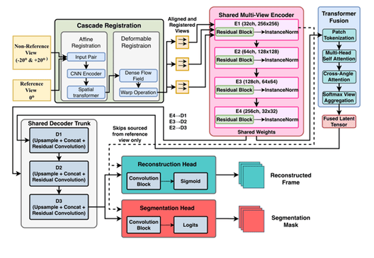
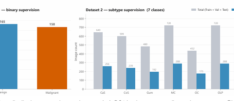
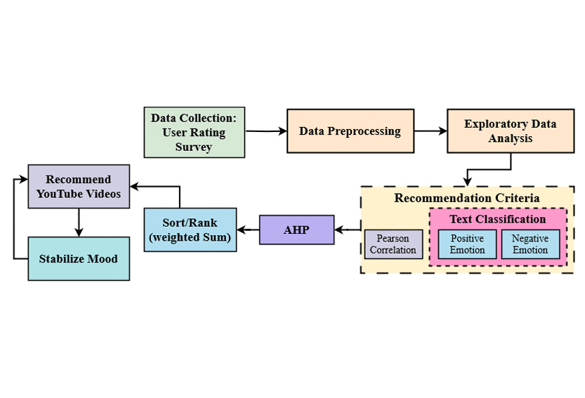
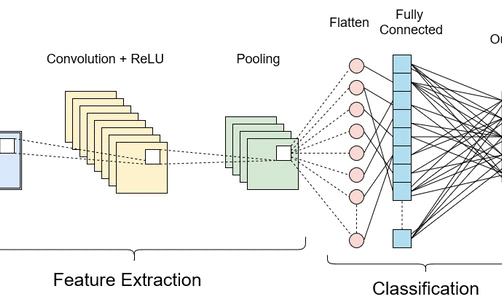

Kazi Md. Al-Wakil
Learner| Researcher | Lecturer
Hi, I’m Kazi Md. Al-Wakil, currently a Lecturer at Northern University Bangladesh (NUB). I recently completed my MSc in Computer Science at South East Technological University, Ireland. My research sits at the intersection of medical imaging and deep learning, with interests spanning computer vision, multimodal AI, and trustworthy AI. I’ve also worked on EEG signal processing for emotion recognition and oral ulcer classification.
Before moving into research, I worked as a Software Engineer at mPower Social Enterprise Ltd on the MERN stack, and later as an Undergraduate Teaching Assistant for object oriented programming.
I’m currently looking for fully funded PhD positions, and I’m open to collaborating on research projects. Feel free to reach out if any of this overlaps with what you’re working on.
News & Updates
| Aug 2026 | Manuscript submitted to Informatics in Medicine Unlocked, currently under review. |
|---|---|
| Sep 2025 | Started MSc classes at SETU. |
| Sep 2025 | Relocated to Waterford, Ireland. |
| May 2025 | Accepted into the MSc programme at South East Technological University, Waterford, Ireland. |
| Feb 2025 | Attended the 16th Undergraduate Convocation at BRAC University. |
| Dec 2024 | Received Best Technical Presentation of the Session award at ICCIT’24. |
| Nov 2024 | First conference paper accepted to IEEE. |
| Oct 2023 | Graduated from BRAC University with Highest Distinction. |
| Sep 2023 | Successfully defended undergraduate thesis. |
| Jun 2022 | Appointed as Undergraduate Teaching Assistant at BRAC University. |
Research Experience

DeepUS-ReconSeg++: Multi-Angle Ultrasound Reconstruction and Segmentation
MSc Thesis, Manuscript in Progress, 2026

CompAttNet: A Lightweight Dual-Head CNN with Complementary Attention for Multi-Task Oral Disease Diagnosis
Informatics in Medicine Unlocked, Manuscript Under Review, 2026

A Hybrid Video Recommendation System Prioritizing Features Using AHP
27th International Conference on Computer and Information Technology, ICCIT'24, 2024

Recommendation System for Mood Stabilization Using Content Recommendation
Undergraduate Thesis, 2023
Experience
- Oct 2024 - Present
Lecturer
Northern University Bangladesh
Dhaka, Bangladesh- Courses Taught - Computer Networks - Mathematical Analysis - Software Development I & II
- Delivered lectures, conducted lab sessions, and supervised undergraduate final-year capstone projects throughout the full project lifecycle.
- Prepared course outlines, lecture materials, assignments, quizzes, and examination questions aligned with curriculum requirements.
- Oct 2023 - Oct 2024
Software Engineer
mPower Social Enterprises Ltd.
Dhaka, Bangladesh- Developed and maintained full-stack applications using Typescript, Node.js, and React.js within an agile team.
- Worked closely with design and product teams to translate wireframes and mockups into responsive, interactive features.
- Optimized components for maximum performance across devices and browsers.
- Jun 2022-Sept 2023
Undergraduate Teaching Assistant
Department of CSE, BRAC University
Dhaka, Bangladesh- Helped students with Object Oriented Programming Related Problems
- Assisted teachers in conducting the lab classes
Education
- Sept 2025 – Sept 2026
MSc in Computer Science - Enterprise Software Systems (Level 9)
South East Technological University, Waterford, Ireland
- Ranked among the top two students in the MSc cohort (current standing, August 2026).
- Expected Award: First Class Honours.
- Thesis
- Title: DeepUS-ReconSeg++: Multi-Angle Ultrasound Reconstruction and Segmentation
A deep learning pipeline integrating deformable image registration, transformer-based cross-angle fusion, and dual-task learning for simultaneous ultrasound reconstruction and segmentation. Achieved PSNR of 40.5966 dB, SSIM of 0.9592, Dice of 0.9273, and IoU of 0.8652 on a held-out test set.
- Title: DeepUS-ReconSeg++: Multi-Angle Ultrasound Reconstruction and Segmentation
- May 2019 - Sept 2023
Bachelor of Science in Computer Science
BRAC University, Dhaka, Bangladesh
- CGPA: 3.98 out of 4.00
- Top 3 in class
- Graduated with Highest Distinction
- VC's List - 7 Semesters
- Thesis
- Title: Recommendation System for Mood Stabilization using Content Recommendation
The main motive of this thesis is to create a system where emotions can be detected by processing brain activity (EEG signals). Make the best use of data we already have in order to create a prototype which can be used later on in a large scale. We will try to analyze which algorithm will work best, whether it's a traditional model or deep learning model. Later on, we implemented a recommendation system based on the fusion of two prevalent techniques, creating a hybrid recommendation system. Furthermore, concepts of Analytic Hierarchy Process (AHP) have been implemented to come up with an efficient algorithm which works in stabilizing an individual's mood gradually.
- Title: Recommendation System for Mood Stabilization using Content Recommendation
Achievements
Academic Recognitions
- Dec 2024
Best Technical Presentation of the Session
27th International Conference on Computer and Information Technology (ICCIT), Cox's Bazar, Bangladesh
- Awarded for the paper: A Hybrid Video Recommendation System Prioritizing Features Using AHP.
- Jan 2021-Sept 2023
Merit Scholarship Based on BRAC University Academic Results
BRAC University, Dhaka, Bangladesh
- 75% waiver on Tuition Fees on every semester for having 3.95+ CGPA
- Sept 2023
Vice Chancellor's List Award
BRAC University, Dhaka, Bangladesh
- Got placed on VC's List for 8 semesters as recognition of achieving a GPA of 3.90-4.00 on those particular semesters.
- Sept 2023
Dean's List Award
BRAC University, Dhaka, Bangladesh
- Got placed on Dean's List for 1 semester as recognition of achieving a GPA of 3.70-3.89 on that particular semester.
- Sept 2023
Completed Bachelor's with Highest Distinction
BRAC University, Dhaka, Bangladesh
- Awarded to candidates whose CGPA is 3.80 or higher.